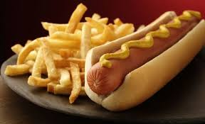

Panchos

Descripcion
Pan pequeño y alargado en el que se coloca una salchicha con mostaza, mahonesa y llajua.
Ingredientes
- Pan de pancho
- salchichas
- condimentos
Paso a paso de como hacer un Pancho
- Caletar salchicas en agua hirviendo
- Poner salchica entre los dos panes
- Agregar condimentos
- Disfrutar del pancho